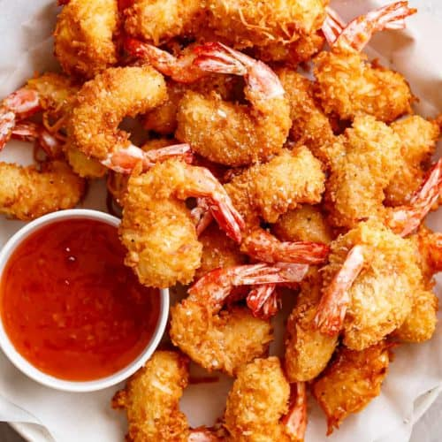

Air Fryer Shrimp

Description
This coconut shrimp air fryer recipe comes out great and is delicious served with a simple spicy honey-lime dip.
Ingredients
- 1/2 cup all-purpose flour
- 1.5 tsp ground black pepper
- 2 large eggs
- 2/3 cup unsweetened flaked coconut
- 1/3 cup panko bread crumbs
- 12 oz uncooked medium shrimp, peeled and deveined
- cooking spray
Steps
- Stir together flour and pepper in a dish. Lightly beat eggs in a second dish. Stir together coconut and panko in a third dish.
- Dredge shrimp in flour mixture one at a time, shaking off excess. Place shrimp on plate and coat with cooking spray.
- Preheat the air fryer to 400 degrees F and add 1/2 of the shrimp, cooking 3 minutes. Turn shrimp over and continue cooking, about 3 minutes more. Season with 1/4 teaspoon salt and repeat with remaining shrimp.
- Whisk together honey, lime juice, and serrano chile in a small bowl and servy with shrimp.